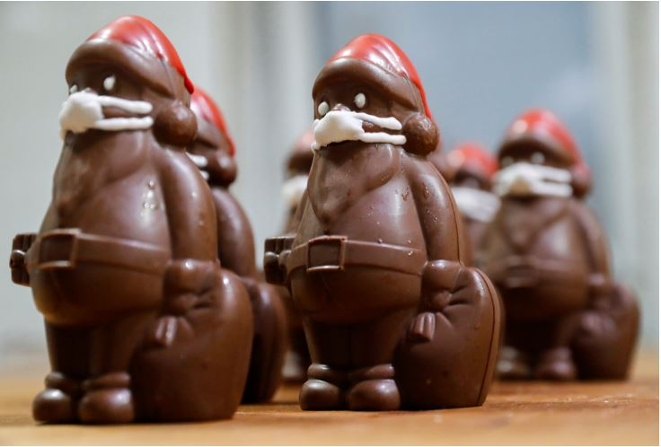
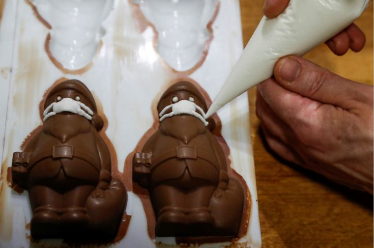

(foto) Atmosferă de Crăciun pandemică. Cum un cofetar
realizează figurine de Moș Crăciun cu mască de protecție
Când cofetarul László Rimóczi a decis să pună măști figurinelor de Moș Crăciun din
ciocolată, pe care le comercializează în micul său magazin dintr-o regiune rurală a Ungariei,
intenția sa era de a face o glumă care să descrețească frunțile oamenilor în timpul
pandemiei de coronavirus, transmite AGERPRES.
Demersul său s-a dovedit a fi o inițiativă abilă de afaceri după ce numărul comenzilor online a explodat,
iar acum abia mai poate ține pasul cu toate cererile.
„Cred că în momentul în care va sosi, Moș Crăciun va trebui să poarte mască, deoarece Moșul trebuie să fie un exemplu
pentru oameni”, a spus Rimóczi din atelierul aflat în spatele casei din localitatea sa natală, Lajosmizse, la circa 70 de kilometri sud de Budapesta.


Pentru a ține pasul cu comenzile, a trebuit să simplifice designul, iar acum produce circa 100 de Moș Crăciuni pe zi, folosind ciocolată italiană fără gluten.
Căciula Moșului o pictează în roșu, iar măștile le confecționează din fâșii minuscule de marțipan alb, adăugând panglici din glazură.
Rimoczi a fost nevoit să schimbe și designul figurinelor Moș Crăciun de dimensiuni mai mari, care inițial au fost confecționate fără măști.
„Erau deja împachetate, dar a trebuit să le despachetăm și să le punem măști căci acum clienții noștri vor numai Moș Crăciuni cu măști”, a spus acesta.
Afacerea lui Rimóczi, cel care realizează de asemenea alte produse din ciocolată comercializate în micul magazin pe care îl are în casă, a fost afectată de pandemia de coronavirus declanșată în martie.
Deși Moș Crăciunii cu mască au crescut vânzările, cofetarul nu se așteaptă să fie o preferință de durată dacă vaccinurile vor ajuta lumea să înfrângă pandemia.